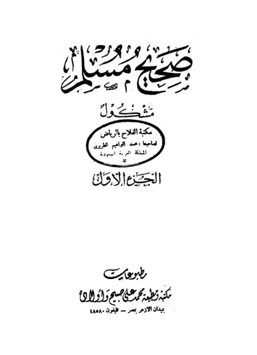

صحيح مسلم
Shahih Muslim
Baca Shahih Muslim (صحيح مسلم) karya Imam Muslim secara gratis di Maktabah Ilmu: teks Arab, Indonesia, Inggris. Tanpa daftar, tanpa iklan.
Buka kitab iniLihat lemari ilmuDaftar isi
- Introduction
- The Book of Faith
- The Book of Purification
- The Book of Menstruation
- The Book of Prayers
- The Book of Mosques and Places of Prayer
- The Book of Prayer - Travellers
- The Book of Prayer - Friday
- The Book of Prayer - Two Eids
- The Book of Prayer - Rain
- The Book of Prayer - Eclipses
- The Book of Prayer - Funerals
- The Book of Zakat
- The Book of Fasting
- The Book of I'tikaf
- The Book of Pilgrimage
- The Book of Marriage
- The Book of Suckling
- The Book of Divorce
- The Book of Invoking Curses
- The Book of Emancipating Slaves
- The Book of Transactions
- The Book of Musaqah
- The Book of the Rules of Inheritance
- The Book of Gifts
- The Book of Wills
- The Book of Vows
- The Book of Oaths
- The Book of Oaths, Muharibin, Qasas (Retaliation), and Diyat (Blood Money)
- The Book of Legal Punishments
- The Book of Judicial Decisions
- The Book of Lost Property
- The Book of Jihad and Expeditions
- The Book on Government
- The Book of Hunting, Slaughter, and what may be Eaten
- The Book of Sacrifices
- The Book of Drinks
- The Book of Clothes and Adornment
- The Book of Manners and Etiquette
- The Book of Greetings
- The Book Concerning the Use of Correct Words
- The Book of Poetry
- The Book of Dreams
- The Book of Virtues
- The Book of the Merits of the Companions
- The Book of Virtue, Enjoining Good Manners, and Joining of the Ties of Kinship
- The Book of Destiny
- The Book of Knowledge
- The Book Pertaining to the Remembrance of Allah, Supplication, Repentance and Seeking Forgiveness
- The Book of Heart-Melting Traditions
- The Book of Repentance
- Characteristics of The Hypocrites And Rulings Concerning Them
- Characteristics of the Day of Judgment, Paradise, and Hell
- The Book of Paradise, its Description, its Bounties and its Inhabitants
- The Book of Tribulations and Portents of the Last Hour
- The Book of Zuhd and Softening of Hearts
- The Book of Commentary on the Qur'an